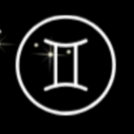
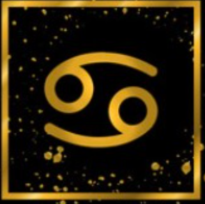
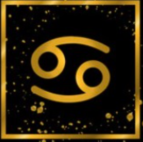
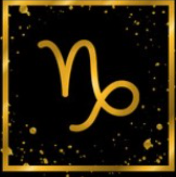
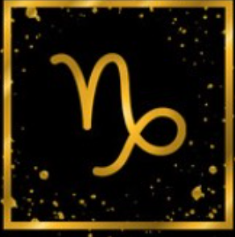
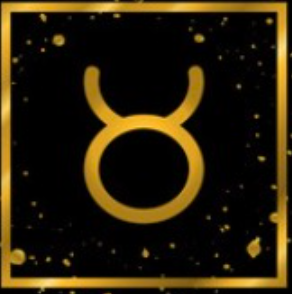

Explore your zodiac sign…

MAR 21 - APR 19

APR 20 - MAY 20

MAY 20 - JUN 20

JUN 21- JUL 22

JUL 23 - AUG 22
AUG 23 - SEP 22
SEP 23 - OCT 22

OCT 24 - NOV 21

NOV 22 - DEC 21
DEC 22 - JAN 19

JAN 20 - FEB 18
FEB 19 - MAR 20
Aries
Aries Dates: MAR 21 - APR 19
Description
As the first sign in the zodiac, the presence of Aries always marks the beginning of something energetic and
turbulent.
They are continuously looking for dynamic, speed, and competition, always being the first in everything - from
work to
social gatherings. Aries is one of the most active zodiac signs. It is in their nature to take action,
sometimes before
they think about it.
Lucky elements
- Lucky Color: Red
- Day: Tuesday
- Lucky Number:1,8,17
- Lucky Stone: Bloodstone
Match Zodiac
Libra, Leo

Strength
Aries loves freedom deeply, does not like being suppressed by the outside world, is ambitious and
adventurous, has the
courage to try, is energetic, will go all out once the goal is determined, is active, enthusiastic, energetic,
responsible, loyal, optimistic and enterprising, Have self-confidence, have the courage to accept new ideas,
have bright
decision-making ability, candid and truthful, have strong explosive power, have the courage to accept
challenges, and
are not afraid of power. Do things quickly. positive. Therefore, Aries is a perfectionist activist strongman
type.
Weakness
Aries lacks patience, irritability, impulsiveness, selfishness, self-centeredness, acrimoniousness,
aggressiveness,
carelessness, and carelessness.
Aries thinks bad things in everything. It is a pessimist who cares too much about other people's opinions and
is a
little bit arrogant. Because Aries takes action first, too strong war gate spirit may appear impulsive and give
people a
sense of oppression.
Libra
Libra Dates: SEP 23 - OCT 22
Description
Practical and well-grounded, Taurus is the sign that harvests the fruits of labor. They feel the need to always
be surrounded by love and beauty, turn to the material world, hedonism, and physical pleasures. People born
with
their Sun in Taurus are sensual and tactile, considering touch and taste the most important of all senses.
Stable and
conservative, this is one of the most reliable signs of the zodiac, ready to endure and stick to their choices
until they reach the point of personal satisfaction.
Lucky elements
- Lucky Color: Green,Pink
- Day: Friday, Monday
- Lucky Number:2,6,9,12,24
- Lucky Stone: Sapphire
Match Zodiac
Scorpio, Cancer
 

Strength
Taurus is patient, passionate, artistic, down-to-earth, planned, able to stick to the end, stubborn in choosing
good, pursuing peace, regular life, trustworthy, independent, firm-willed, enthusiastic, friendly, patient and
responsible, Reliable,
practical, reliable, with business acumen and solid values, and a sense of beauty. Be cautious. Will be
thoughtful beforehand. A Taurus character is cautious, he likes to
live a comfortable life, he will think twice before acting, and he will be more careful, and he will rarely
fail in doing things.
Weakness
Taurus is too possessive, jealous of stubborn die-hards, lack of coordination, not good at the division of
labor, too
serious attitude, lack of sense of humor, unaware, too insistent on one's own pace, too many rules, too much
caution,
lack of demand New courage, greed, stubbornness, jealousy, laziness, old-fashioned, lack of resilience,
self-indulgence,
irritability. Stubborn. The lack of positive type Taurus is very stubborn, more insistent, will stick to what
you
believe, and act slowly, always slow half-beat type.
Virgo
Virgo Dates: AUG 23 - SEP 22
Description
Virgos are always paying attention to the smallest details and their deep sense of humanity makes them one of
the most
careful signs of the zodiac. Their methodical approach to life ensures that nothing is left to chance, and
although they
are often tender, their heart might be closed for the outer world. This is a sign often misunderstood, not
because they
lack the ability to express it, but because they won’t accept their feelings as valid, true, or even relevant
when
opposed to reason. The symbolism behind the name speaks well of their nature, born with a feeling they are
experiencing
everything for the first time.
Lucky elements
- Lucky Color: Grey, Beige
- Day: Wednesday
- Lucky Number: 15,23,32
- Lucky Stone: Carnelian
Match Zodiac
Pisces, Cancer

Strength
Virgo pursues perfection, never discourages, is down-to-earth,
cautious, careful, good at collecting information, hardworking, keeping duty, reliable,
humble and not exaggerating, with precise observation, patience, faithful to love, humble, liking Neat,
careful, clear-headed, and analytical, able to distinguish right from wrong.
Weakness
Virgo is too fastidious, nagging, trivial, unreasonably worried,
poor and nervous, self-sufficient, has a tendency to cleanliness, lacks the elegance of accepting criticism,
is not romantic enough, does not respect other people's dreams, interpersonal relationships need to be
strengthened, too practical, and lacks Foresight, like picking the bones in the egg, too demanding to be
critical, sentimental, fussy, old-fashioned, and hard to please.
Libra
Libra Dates: SEP 23 - OCT 22
Description
It is the personality of Libra to maintain a very balanced state of thinking about the extremes of good and
evil. When dealing with people, he or she is able to make jokes at the right time and control the harmony of
the scene. Generally speaking, the life of a Libra is ordinary and happy.
A Libra will always maintain a refined and smooth attitude that is never hurtful and therefore does not like to
show the inner truth. The personality is steady and sensible. Libra has an excellent sense of balance and
impartial judgment, is good at coordination, and can often take responsibility for mediating between opposing
views. Libra is logical and strategic in all matters, and does not use violence to solve things, but uses
clever tactics to find a balance between reciprocal rights and interests. Libra is a socially gifted person who
can easily win the affection and courtesy of those in authority.
Lucky elements
- Lucky Color: Pink
- Lucky Number: 5, 6 & 9
- Lucky Stone: Diamond
- Lucky Days: Sundays, Mondays and Tuesdays
Match Zodiac
Gemini, Leo, Sagittarius and Aquarius

Strength
Libra is fair and objective, has a sense of justice and is adaptable, has an appreciation for beauty, logical,
analytical, naturally elegant, a romantic love interest.
Libra is a neutralist, often a peaceful coordinator, with a fair and caring heart towards anyone, so Libra can
be placed in a fair position to play the management of social officers, and has a strong ability to control
their own internal emotions, always maintain a gentle attitude towards others.
Translated with www.DeepL.com/Translator (free version)
Weakness
Libra is indecisive, will not be determined, easily influenced by others, fear of offending people, can not
bear the pressure, no commitment, excessive demand for fairness, can not afford to lose, resting on their
laurels, treating the symptoms but not the root cause, always self-justification, like to enjoy, often
unintentionally discharging electricity, lack of self-reflection ability.
Libra has the side of vanity, do not like to show their own shortcomings, will always show the best side, and
too much attention to their appearance, like to spend money on scoring, sometimes will hesitate to make a
choice, and lose many opportunities.
Scorpio
Scorpio Dates: OCT 24 - NOV 21
Description
The mysterious sign of the zodiac. They can be obsessive and destructive; in the land of love, there is no grey
area, no black and white. They are very clear about their goals, and once they set them, they move forward.
Scorpio people have a strong sixth sense, mysterious ability to see and attract, often by intuition; although
they have a keen observation, but often still rely on the feeling to decide everything.
Scorpio personality is strong and uncompromising, also very aggressive, which is a self-required
self-transcendence to constantly fill the deepest desires of the heart. Because of this, the Scorpion always
has a goal in mind and is very persistent, with an indomitable fighting spirit and fighting power, moving
thoughtfully towards the goal. Because they are a water sign, they are emotionally sensitive, but they are
self-centered and ignore the opinions of others.
In short, Scorpio is a subtle and complex "hybrid" with a strong sense of responsibility, resilience,
conceptualization, organization, strong will, strong desire to dominate, a unique instinct for the mysteries of
life, and always a lot of energy.
Lucky elements
- Lucky Color: Violet Blue
- Lucky Number: 1, 2, 4 & 7
- Lucky Stone: Topaz
- Lucky Days: Sundays, Mondays, Tuesdays and Thursdays
Match Zodiac
Cancer, Virgo, Capricorn and Pisces
 

Strength
Deep planning and far-sightedness
Clearly defined grudges and grievances
A keen sense of intuition
Execution of decisions
Perseveres in spite of setbacks
A loyalty to friends
Persistent in pursuing the truth of the matter
Good at keeping secrets
Has an underlying passion for life
Weakness
Too aggressive
Overly possessive
Jealous and suspicious
Too vindictive
Too much of a hard-headed person
Sagittarius
Sagittarius Dates: NOV 22 - DEC 20
Description
The Sagittarius is loyal, generous and unrestrained, energetic, argumentative, impatient, ambitious for power,
compassionate towards those who suffer and oppressed. In terms of character, Sagittarius is honest, sincere,
frank and trustworthy. In temperament, Sagittarius is kind and generous to their friends, smooth and diplomatic
in many matters. Sagittarius has strong mental strength, hates all uncouth behavior, hates shoddy things, has a
noble temperament, is extremely bright and inspiring in their manners, has personality and boldness, is
courageous, and has strong self-esteem. Sagittarius loves freedom, has a very democratic nature and likes to
make friends.
Sagittarius has a good sense of humor, determination and willpower, but can become very stubborn when angry.
Has a flexible imagination to use in practical matters. Interested in what is going on around you and can
concentrate on it. Intuitive and able to see people's motives.
Strong intuition and the ability to sense things. You have high ideals, high dreams, and are lucky to have
self-trust. You have a tendency to divide your energy among many things and do not want to concentrate on a
single goal. You have a special talent for handling emergencies, and an unexpected event that comes out of
nowhere often pushes you one step further toward success. You like to discuss and debate with people, and you
like to study philosophy.
Lucky elements
- Lucky Color: Light Blue, White, Cream and Orange
- Lucky Number: 6, 5, 3 & 8
- Lucky Stone: Rashi
- Lucky Days: Wednesdays, Thursdays and Fridays
Match Zodiac
Aries, Leo, Libra and Aquarius

Strength
Optimistic by nature, full of ideals in life, honest and frank, rich sense of humor, love of peace, friendly,
strong in action, have their own philosophy of dealing with the world, can withstand blows, passion for saving
the world and people, optimistic, lively, frank, strong self-esteem, versatile, with high intelligence, quite
intuitive, have the power to inspire others, open-minded, adaptable, have good judgment, have the ability to
handle urgent matters, good at philosophical thinking, rich in a high sense of justice, very sensitive and
intelligent, love of freedom, sincere, honest, reliable, prudent.
Weakness
Careless, straightforward, easily offended, lack of patience, impulsive, do not know how to think twice, do not
believe in evil, do not listen to advice, overly idealistic, impractical, lack of step-by-step plans, sensitive
personality, a little impetuous, like to exaggerate, no sense of responsibility, erratic, restless tendency,
blind and over-optimistic, careless, paranoid, act a little clumsy.
Cancer
Scorpio Dates: Jun 16 - Jul 22
Description
Cancer is very serious in relationships. If you are strong, Cancer will be stronger. If you are willing to give
Cancer gentleness, then Cancer will definitely give you gentleness back.Cancer is very easy to substitute their
own positive or negative emotions into the relationship. Although it seems Cancer will actively guide the speed
of a relationship because of their emotions, in fact Cancer is very passive. They are getting easily influenced
by their partner. Expressing your tenderness and love will give Cancer positive guidance.
Lucky elements
Lucky Color: Gree, White, Grey, Purple
Lucky Number: 2 , 3, 8
Lucky Stone: Garnet
Lucky Days: Fridays
Match Zodiac
Pisces, Scorpio, Capricorn
Strength
- Cancer has strong responsibility for people they love, such as family, friendship, romantic relationships,
etc.
- Cancer is very honest and has strong tolerance for others. They wish the best for others and hope the
people they love would be happy.
- Extraordinary ability to dig insights and strong intuition ability.
Weakness
- Very emotional and sentimentality. Sometimes, these will make Cancer feel less safe and upset.
- Cancer is dedicated to making them feel tired in a relationship if they can’t judge others are treating
them like Cancer treats them.
- Often hesitate to do something which will affect them miss a good opportunity.
Pisces
Scorpio Dates: Feb 19 - Mar 20
Description
For Pisces, they are both emotional and rational in their relationships. Pisces will involuntarily fall into
the beautiful fantasy of feelings and indulge in it while enjoying happiness. Once the fantasy is broken, they
will collapse again, and then despair. But once they regain their sanity, they will become very unfeeling and
will no longer be nostalgic for this relationship.
Lucky elements
Lucky Color: Green, Blue
Lucky Number: 7 , 16, 25， 34
Lucky Stone: Amethyst
Lucky Days: Thursday
Match Zodiac
Cancer, Virgo, Scorpio
Strength
- Pisces is very empathetic. So Pisces can be good friends and they have strong tolerance to people they
love.
- Pisces trust others. So please don’t play Pisces trust.
- Pisces is very romantic. They love beautiful things and people.
Weakness
- Bad at managing their own finances.
- Pisces are too easy to fantasize and deceive themselves, so they lack the courage to face reality.
- Pisces is very easy to be influenced by the environment such as new places, change of relationships, etc.
Gemini
Scorpio Dates: May 21 - June 20
Description
From the Gemini perspective, the result of participation is more important than the consequences. Because a
good relationship needs to be protected from all participants. Gemini focuses more on current things instead of
an uncertain future. Gemini can be very loyal and concentrated to a person or a thing. That loyalty and
concentration usually comes from how much Germini depends on you. Companionship is the most important thing for
Gemini.
Lucky elements
Lucky Color: Blue
Lucky Number: 3, 4
Lucky Stone: Agate
Lucky Days: Wednesday
Match Zodiac
Libra, Aquarius, Shooter
Strength
- Gemini is good at socializing and making friends because they are cheerful and humorous.
- Very adaptable. Gemini can live well no matter where they are, and they can fit in a new environment
easily.
- Versatile. Gemini is very versatile and good at swimming, playing guitar, dancing, drawing, etc. They are
also good at writing and editing.
Weakness
- Suspicions. Gemini always doubts others, and won’t trust others easily. To gain the trust of Gemini. It
really takes a long time to get along.
- Strong curiosity. Geminis are very curious and want to try everything, which often makes them fall into the
abyss.

Leo
Leo Dates: July 23 - August 22
Lucky element:
- Lucky number: 7
- Lucky color: Ivory
- Lucky Day: Sunday
- Lucky stone: Amethyst
Match Zodiac
Sagittarius, Aries
Strength
Leo people have leadership skills, motivational temperament,
strong organization, enthusiasm and cheerfulness, generous,
generous, open-minded, forgiving, eloquent, trustworthy,
optimistic, not suspicious, sincere and honest. Leo, who
is born with the demeanor of the heavens, has strong leadership
skills, is good at showing his best side, and is always full of
confidence in acting and doing things actively. He is a leader.
Weakness
Leo has an inexplicable sense of superiority, likes to accept
flattery, lacks the virtue of thrift, likes to command others,
lacks patience, self-righteous, self-righteous, remembers the
past, can not bend. Because Leo is born with a strong leadership
instinct, he likes to be a leader in a group, and he likes to
express himself. It is inevitable that he has an attitude of arrogance,
and he does not like to let himself be driven by others as a center.
Leo with strong vanity likes to be praised by others and seeks good performance,
so he will self-inflate, but will be disgusted by the other party, and
make people stay away.
Aquarius
Aquarius Dates: January 20 - February 18
Lucky element:
- Lucky number: 3
- Lucky color: Blue
- Lucky Day: Wednesday
- Lucky stone: Tourmaline
Match Zodiac
Libra, Leo, Gemini

Strength
Aquarius advocates freedom, full of humane spirit, wide interest,
full of creativity, willing to discover the truth, forward-looking,
with rational wisdom, independence, personal style, willing to help
others, loyal to their feelings, strong curiosity, independence,
fraternity, Friendly, loyal, reliable, creative, farsighted, wise,
innovative, sharp-minded, observant, and full of reform spirit.
Weakness
Aquarius lacks enthusiasm, thinks too idealistically,
does not follow the card, breaks the casserole and asks to the end,
believes too much in their own judgments, changes in thoughts,
has no perseverance, is difficult to put the heart to friends,
overemphasizes the autonomy of life, and likes a lot Nosy,
too sensible, lack of taste, weird personality, overly persistent,
unconventional, easy to exaggerate, stubborn, clingy, unconscious,
overly idealistic, stubborn, extreme, rebellious, unsocial.
Capricorn
Capricorn Dates: December 22 - January 19
Lucky element:
- Lucky number: 0,5,9
- Lucky color: Orange
- Lucky day: Saturday
- Lucky stone: Garnet
Match Zodiac
Taurus, Virgo, Gemini

Strength
Capricorns have a practical outlook on life,
work on the ground, strong willpower, not easily affected,
cautious everywhere, perseverance to overcome difficulties,
adherence to principles, emphasis on discipline, family
values, humility to others, and a unique sense of humor ,
Conservative, cautious, practical, responsible, reliable,
witty, independent, respectful of authority, value oneself,
cautious, ambitious, patient, and disciplined.
Weakness
Capricorns are too realistic, stubborn, not optimistic enough,
personal egoism, lack of romantic interest, too suppressed their
desires, too focused on personal goals, lack of care and enthusiasm
for the crowd, not good at communication, unable to adapt to changes,
pessimistic, and kind Change, indifferent and serious in appearance,
not easy to approach, clingy, stingy.